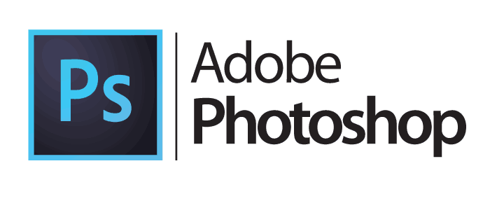

Las herramienta que se utilizaron para realizar este proyecto fueron:
¿Qué es Adobe Photoshop?

Adobe Photoshop es un editor de fotografías desarrollado por Adobe Systems Incorporated. Usado principalmente para el retoque de fotografías y gráficos, su nombre en español significa "taller de fotos". Es conocido mundialmente.2 Fue creado en 1986 por los hermanos Thomas Knoll y John Knoll, desde entonces se ha convertido en una marca de uso común, lo que lleva a su uso como un verbo, aunque Adobe desaconseja su uso.
¿Qué es Adobe Illustrator?
Adobe Illustrator (AI) es un editor de gráficos vectoriales sirve para editar entre otras cosas (ilustración como rama del arte digital aplicado a la ilustración técnica o el diseño gráfico, entre otros).
¿Qué es Adobe Spark ?
Adobe Spark es una herramienta en línea fácil de usar que permite a los diseñadores crear gráficos de calidad profesional, videos promocionales breves, historias web impactantes de una sola página y presentaciones atractivas que comunican ideas de forma coherente y rápida.
¿Qué es animaker ?
Animaker Inc. es un software de animación de video de bricolaje . El software está basado en la nube y se lanzó en 2014. Permite a los usuarios crear videos animados usando plantillas y personajes prediseñados. En 2017, Animaker se convirtió en la primera herramienta en lanzar un creador de video vertical animado. El nombre "Animaker" es un acrónimo de las palabras "Animación" y "Creador".
¿Qué es html y css ?
HTML y CSS son dos lenguajes informáticos claves para desarrollar un sitio web. Si no lo sabías, no te preocupes. Una vez hayas terminado de leer este artículo, entenderás muchas de las cosas que pasan en el desarrollo front-end de todo sitio web.
Así que te adelantamos que HTML siempre representará contenido y CSS siempre representará la apariencia de ese contenido.